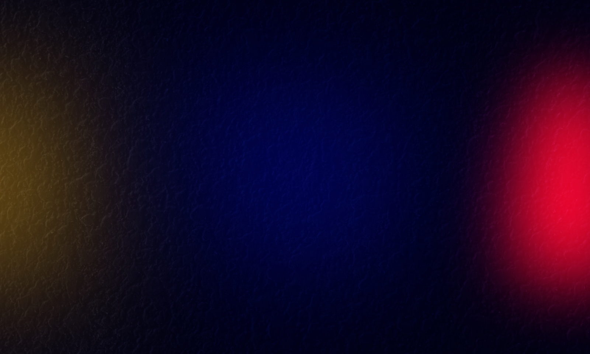

Nombre del Creador:
Cristian Santiago Salazar Caicedo.
Profesión:
Estudiante de Licenciatura en Informática.
Biografia:
El Creador de esta pagina web, es un apasionado educador y hábil desarrollador web, fusionando la enseñanza y la tecnología para ofrecer una experiencia educativa única.
